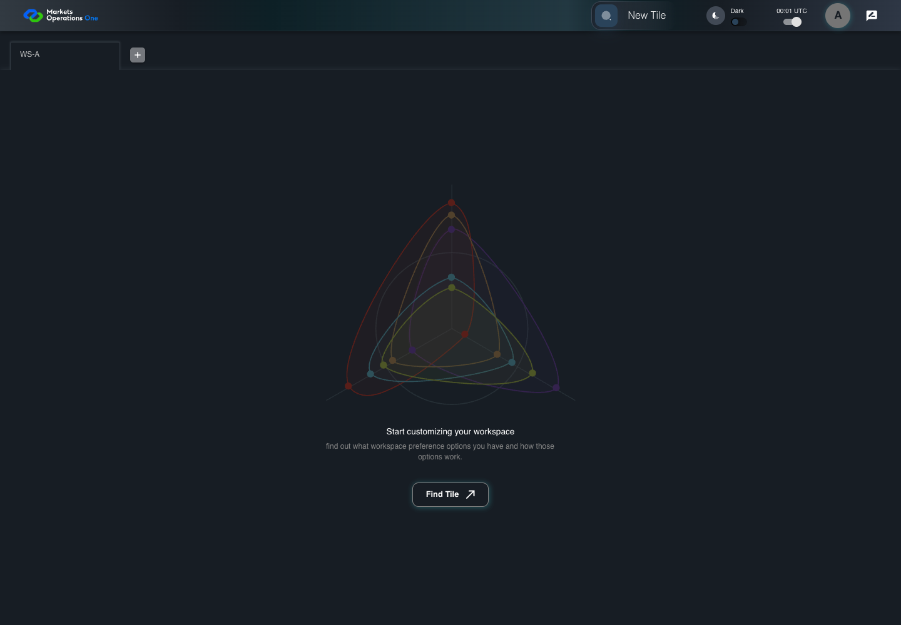

AUTH-070 repeated mouse movements debounce
PASS · application/run-050/auth-070-repeated-mouse-movements-debounce-573f333c157b-attempt-1 · ACTUAL_APPLICATION_LOCAL_SERVICES
Actual MFE; controlled API responses, clock, visibility and suspension adapters. Unsigned browser-only credentials. No natural lifecycle, real identity or service policy acceptance.
2026-10-22T06:05:23.994Z to 2026-10-22T06:05:26.957Z
Assertions and result · Artifact manifest · Exact run inputs and source hashes
Result SHA-256:617ba2e6071ae80fc9780eb3af3c0f7ba9910923a2090b47487c8a1418e1e972Machine observations
- session-fixture.json
ae4f861fdf897f0d53835aad5fdfb076222b70bb3e761a1dc7fc58d98dd9e046 - session-observations.json
afebcdf5b9e533aa0d621a60148f1419e22364e20033c4c23528cb0ca899c462
Screenshot capture: CAPTURED. Named frames: 20.
Step screenshot bindings: COMPLETE. 19/19 canonical steps have execution screenshots.
Bindings measure structural coverage only. They do not establish screenshot content quality or relevance.
Screenshot content review: NOT_REVIEWED. Recorded context: 0/20 frames. Identical image bytes: 18 repeated frames. Recorded context does not establish human visual review.
Canonical step timeline
Given User A is authenticated as user-a in an isolated browser context
Execution: PASSED.
1. step-01 Visible state after step 1: Given User A is authenticated as user-a in an isolated browser context
2026-10-22T06:05:25.519Z · 1440×1000
Step: /Users/lushevol/code/github/ratan-release-impact/workbench/tasks/ui-test-coverage-20261022/test-cases.md:2659
SHA-256:173819b107f9721ddd580be6e85c728fb50ae34f4f23504c76db9e83104ff541And the selected fixture tab is labelled "WS-A" inside the tablist named "workspaces" on the Home page
Execution: PASSED.
2. step-02 Visible state after step 2: And the selected fixture tab is labelled "WS-A" inside the tablist named "workspaces" on the Home page
2026-10-22T06:05:25.574Z · 1440×1000
Step: /Users/lushevol/code/github/ratan-release-impact/workbench/tasks/ui-test-coverage-20261022/test-cases.md:2660
SHA-256:173819b107f9721ddd580be6e85c728fb50ae34f4f23504c76db9e83104ff541Image bytes match frame 1. An unchanged image can be valid for consecutive assertions. This match does not establish correct step content.
And access A expires at controlled time T+900 seconds; refresh R expires at T+13524 seconds
Execution: PASSED.
3. step-03 Visible state after step 3: And access A expires at controlled time T+900 seconds; refresh R expires at T+13524 seconds
2026-10-22T06:05:25.658Z · 1440×1000
Step: /Users/lushevol/code/github/ratan-release-impact/workbench/tasks/ui-test-coverage-20261022/test-cases.md:2661
SHA-256:173819b107f9721ddd580be6e85c728fb50ae34f4f23504c76db9e83104ff541Image bytes match frame 2. An unchanged image can be valid for consecutive assertions. This match does not establish correct step content.
And the controlled time is T+60 seconds
Execution: PASSED.
4. step-04 Visible state after step 4: And the controlled time is T+60 seconds
2026-10-22T06:05:25.729Z · 1440×1000
Step: /Users/lushevol/code/github/ratan-release-impact/workbench/tasks/ui-test-coverage-20261022/test-cases.md:2662
SHA-256:49cd0ba7e37a582ffb5da4c3164ab41da4db84cffa042d8395ac70a8688d7ee1When User A moves the mouse over the tablist named "workspaces" on the Home page
Execution: PASSED.
5. step-05 Visible state after step 5: When User A moves the mouse over the tablist named "workspaces" on the Home page
2026-10-22T06:05:25.810Z · 1440×1000
Step: /Users/lushevol/code/github/ratan-release-impact/workbench/tasks/ui-test-coverage-20261022/test-cases.md:2663
SHA-256:49cd0ba7e37a582ffb5da4c3164ab41da4db84cffa042d8395ac70a8688d7ee1Image bytes match frame 4. An unchanged image can be valid for consecutive assertions. This match does not establish correct step content.
And the controlled browser clock reaches T+61 seconds
Execution: PASSED.
6. step-06 Visible state after step 6: And the controlled browser clock reaches T+61 seconds
2026-10-22T06:05:25.894Z · 1440×1000
Step: /Users/lushevol/code/github/ratan-release-impact/workbench/tasks/ui-test-coverage-20261022/test-cases.md:2664
SHA-256:49cd0ba7e37a582ffb5da4c3164ab41da4db84cffa042d8395ac70a8688d7ee1Image bytes match frame 5. An unchanged image can be valid for consecutive assertions. This match does not establish correct step content.
And User A moves the mouse over the tablist named "workspaces" on the Home page
Execution: PASSED.
7. step-07 Visible state after step 7: And User A moves the mouse over the tablist named "workspaces" on the Home page
2026-10-22T06:05:25.956Z · 1440×1000
Step: /Users/lushevol/code/github/ratan-release-impact/workbench/tasks/ui-test-coverage-20261022/test-cases.md:2665
SHA-256:49cd0ba7e37a582ffb5da4c3164ab41da4db84cffa042d8395ac70a8688d7ee1Image bytes match frame 6. An unchanged image can be valid for consecutive assertions. This match does not establish correct step content.
And the controlled browser clock reaches T+62 seconds
Execution: PASSED.
8. step-08 Visible state after step 8: And the controlled browser clock reaches T+62 seconds
2026-10-22T06:05:26.034Z · 1440×1000
Step: /Users/lushevol/code/github/ratan-release-impact/workbench/tasks/ui-test-coverage-20261022/test-cases.md:2666
SHA-256:49cd0ba7e37a582ffb5da4c3164ab41da4db84cffa042d8395ac70a8688d7ee1Image bytes match frame 7. An unchanged image can be valid for consecutive assertions. This match does not establish correct step content.
And User A moves the mouse over the tablist named "workspaces" on the Home page
Execution: PASSED.
9. step-09 Visible state after step 9: And User A moves the mouse over the tablist named "workspaces" on the Home page
2026-10-22T06:05:26.084Z · 1440×1000
Step: /Users/lushevol/code/github/ratan-release-impact/workbench/tasks/ui-test-coverage-20261022/test-cases.md:2667
SHA-256:49cd0ba7e37a582ffb5da4c3164ab41da4db84cffa042d8395ac70a8688d7ee1Image bytes match frame 8. An unchanged image can be valid for consecutive assertions. This match does not establish correct step content.
And the controlled browser clock reaches T+63 seconds
Execution: PASSED.
10. step-10 Visible state after step 10: And the controlled browser clock reaches T+63 seconds
2026-10-22T06:05:26.155Z · 1440×1000
Step: /Users/lushevol/code/github/ratan-release-impact/workbench/tasks/ui-test-coverage-20261022/test-cases.md:2668
SHA-256:49cd0ba7e37a582ffb5da4c3164ab41da4db84cffa042d8395ac70a8688d7ee1Image bytes match frame 9. An unchanged image can be valid for consecutive assertions. This match does not establish correct step content.
And User A moves the mouse over the tablist named "workspaces" on the Home page
Execution: PASSED.
11. step-11 Visible state after step 11: And User A moves the mouse over the tablist named "workspaces" on the Home page
2026-10-22T06:05:26.219Z · 1440×1000
Step: /Users/lushevol/code/github/ratan-release-impact/workbench/tasks/ui-test-coverage-20261022/test-cases.md:2669
SHA-256:49cd0ba7e37a582ffb5da4c3164ab41da4db84cffa042d8395ac70a8688d7ee1Image bytes match frame 10. An unchanged image can be valid for consecutive assertions. This match does not establish correct step content.
And the controlled browser clock reaches T+64 seconds
Execution: PASSED.
12. step-12 Visible state after step 12: And the controlled browser clock reaches T+64 seconds
2026-10-22T06:05:26.282Z · 1440×1000
Step: /Users/lushevol/code/github/ratan-release-impact/workbench/tasks/ui-test-coverage-20261022/test-cases.md:2670
SHA-256:49cd0ba7e37a582ffb5da4c3164ab41da4db84cffa042d8395ac70a8688d7ee1Image bytes match frame 11. An unchanged image can be valid for consecutive assertions. This match does not establish correct step content.
And User A moves the mouse over the tablist named "workspaces" on the Home page
Execution: PASSED.
13. step-13 Visible state after step 13: And User A moves the mouse over the tablist named "workspaces" on the Home page
2026-10-22T06:05:26.333Z · 1440×1000
Step: /Users/lushevol/code/github/ratan-release-impact/workbench/tasks/ui-test-coverage-20261022/test-cases.md:2671
SHA-256:49cd0ba7e37a582ffb5da4c3164ab41da4db84cffa042d8395ac70a8688d7ee1Image bytes match frame 12. An unchanged image can be valid for consecutive assertions. This match does not establish correct step content.
And the controlled browser clock reaches T+65 seconds
Execution: PASSED.
14. step-14 Visible state after step 14: And the controlled browser clock reaches T+65 seconds
2026-10-22T06:05:26.381Z · 1440×1000
Step: /Users/lushevol/code/github/ratan-release-impact/workbench/tasks/ui-test-coverage-20261022/test-cases.md:2672
SHA-256:49cd0ba7e37a582ffb5da4c3164ab41da4db84cffa042d8395ac70a8688d7ee1Image bytes match frame 13. An unchanged image can be valid for consecutive assertions. This match does not establish correct step content.
And User A moves the mouse over the tablist named "workspaces" on the Home page
Execution: PASSED.
15. step-15 Visible state after step 15: And User A moves the mouse over the tablist named "workspaces" on the Home page
2026-10-22T06:05:26.432Z · 1440×1000
Step: /Users/lushevol/code/github/ratan-release-impact/workbench/tasks/ui-test-coverage-20261022/test-cases.md:2673
SHA-256:49cd0ba7e37a582ffb5da4c3164ab41da4db84cffa042d8395ac70a8688d7ee1Image bytes match frame 14. An unchanged image can be valid for consecutive assertions. This match does not establish correct step content.
Then the browser records exactly 0 new POST requests to "/api/auth/v2/sso/extend"
Execution: PASSED.
16. step-16 Visible state after step 16: Then the browser records exactly 0 new POST requests to "/api/auth/v2/sso/extend"
2026-10-22T06:05:26.486Z · 1440×1000
Step: /Users/lushevol/code/github/ratan-release-impact/workbench/tasks/ui-test-coverage-20261022/test-cases.md:2674
SHA-256:49cd0ba7e37a582ffb5da4c3164ab41da4db84cffa042d8395ac70a8688d7ee1Image bytes match frame 15. An unchanged image can be valid for consecutive assertions. This match does not establish correct step content.
When the controlled browser clock reaches T+70 seconds without further mouse movement
Execution: PASSED.
17. step-17 Visible state after step 17: When the controlled browser clock reaches T+70 seconds without further mouse movement
2026-10-22T06:05:26.567Z · 1440×1000
Step: /Users/lushevol/code/github/ratan-release-impact/workbench/tasks/ui-test-coverage-20261022/test-cases.md:2675
SHA-256:49cd0ba7e37a582ffb5da4c3164ab41da4db84cffa042d8395ac70a8688d7ee1Image bytes match frame 16. An unchanged image can be valid for consecutive assertions. This match does not establish correct step content.
Then the browser records exactly 1 new POST requests to "/api/auth/v2/sso/extend"
Execution: PASSED.
18. step-18 Visible state after step 18: Then the browser records exactly 1 new POST requests to "/api/auth/v2/sso/extend"
2026-10-22T06:05:26.632Z · 1440×1000
Step: /Users/lushevol/code/github/ratan-release-impact/workbench/tasks/ui-test-coverage-20261022/test-cases.md:2676
SHA-256:49cd0ba7e37a582ffb5da4c3164ab41da4db84cffa042d8395ac70a8688d7ee1Image bytes match frame 17. An unchanged image can be valid for consecutive assertions. This match does not establish correct step content.
And the tab labelled "WS-A" inside the tablist named "workspaces" on the Home page is visible
Execution: PASSED.
19. step-19 Visible state after step 19: And the tab labelled "WS-A" inside the tablist named "workspaces" on the Home page is visible
2026-10-22T06:05:26.721Z · 1440×1000
Step: /Users/lushevol/code/github/ratan-release-impact/workbench/tasks/ui-test-coverage-20261022/test-cases.md:2677
SHA-256:49cd0ba7e37a582ffb5da4c3164ab41da4db84cffa042d8395ac70a8688d7ee1Image bytes match frame 18. An unchanged image can be valid for consecutive assertions. This match does not establish correct step content.
Additional named frames

The final visible state after the named test assertions.
2026-10-22T06:05:26.832Z · 1440×1000Step: Test source: /Users/lushevol/code/github/ratan-release-impact/workbench/e2e/audit-specs/auth-session-expanded.spec.ts:120
SHA-256:
49cd0ba7e37a582ffb5da4c3164ab41da4db84cffa042d8395ac70a8688d7ee1Image bytes match frame 19. An unchanged image can be valid for consecutive assertions. This match does not establish correct step content.
Screenshots establish visible state only. Assertions and traces support functional claims.